%%{init: {
"theme": "base",
"themeVariables": {
"fontSize": "20px",
"fontFamily": "Arial"
},
"flowchart": {
"nodeSpacing": 60,
"rankSpacing": 70
}
}}%%
flowchart LR
A["Nokia 3210 4G<br>complete phone"]
B["Main PCB<br>motherboard"]
C["Unisoc T107<br>system-on-chip"]
D["ARM Cortex-A7<br>CPU core"]
E["CPU internals<br>pipeline, cache, NEON,<br>FPU, interrupts, bus interface"]
A --> B --> C --> D --> E
classDef device fill:#f8fafc,stroke:#334155,stroke-width:2px,color:#0f172a,font-size:20px;
class A,B,C,D,E device;
How does the Nokia 3210 4G Work?
A Teardown of Networks, Radio, Embedded Systems, Audio, Camera, and Power
Reverse Engineering
Engineering
Tutorial
Electrical Engineering
Electronics
Embedded Systems
Computer Science
Why do a teardown of the Nokia 3210 4G?
In this post, we will take a deep dive into the inner workings of the Nokia 3210 4G. The phone was relaunched in 2024 for the 25th anniversary of the original Nokia 3210. This teardown uses the device to explain the hardware components, network connectivity, embedded systems, audio system, camera pipeline, memory architecture, and power-management system that make a modern feature phone work.
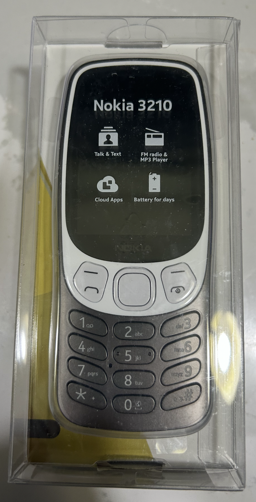
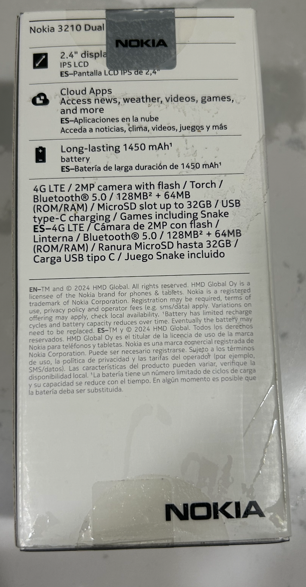
If you have not yet read the earlier post on the basics of how a mobile phone works, you can read it here: How does a Mobile Phone Work?
Few highlights and reflections from the previous posts.
One of the most interesting things for me was realizing, that our voice calls are travelling through complex networks travelling at light speed. This is really fascinating that we are able to send information at light speed. Our voice is converted into digital signals, and goes through many complex infrastructures, and it reaches the other person in a matter of milliseconds.
One fundamental research question you could ponder for future is: We are able to translate information into light speed, but why not humans could travel at light speed?
How to do the teardown of Nokia 3210?
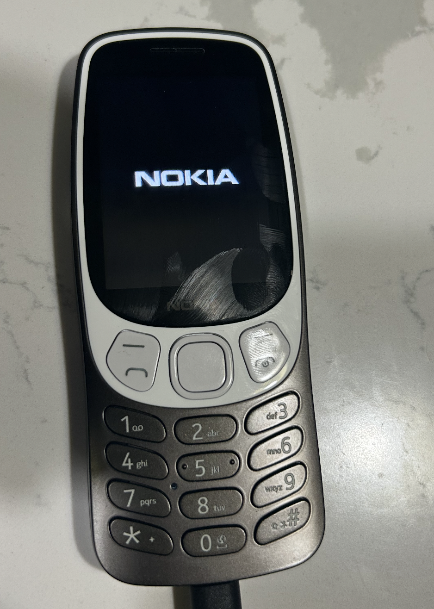
In order to do a teardown, make sure you have the tools required for the teardown, such as a screwdriver, tweezers. I got myself a Hyper Tough 28 Piece Precision Screwdriver Set, which is really good for this kind of work.
Tools Used for the Teardown
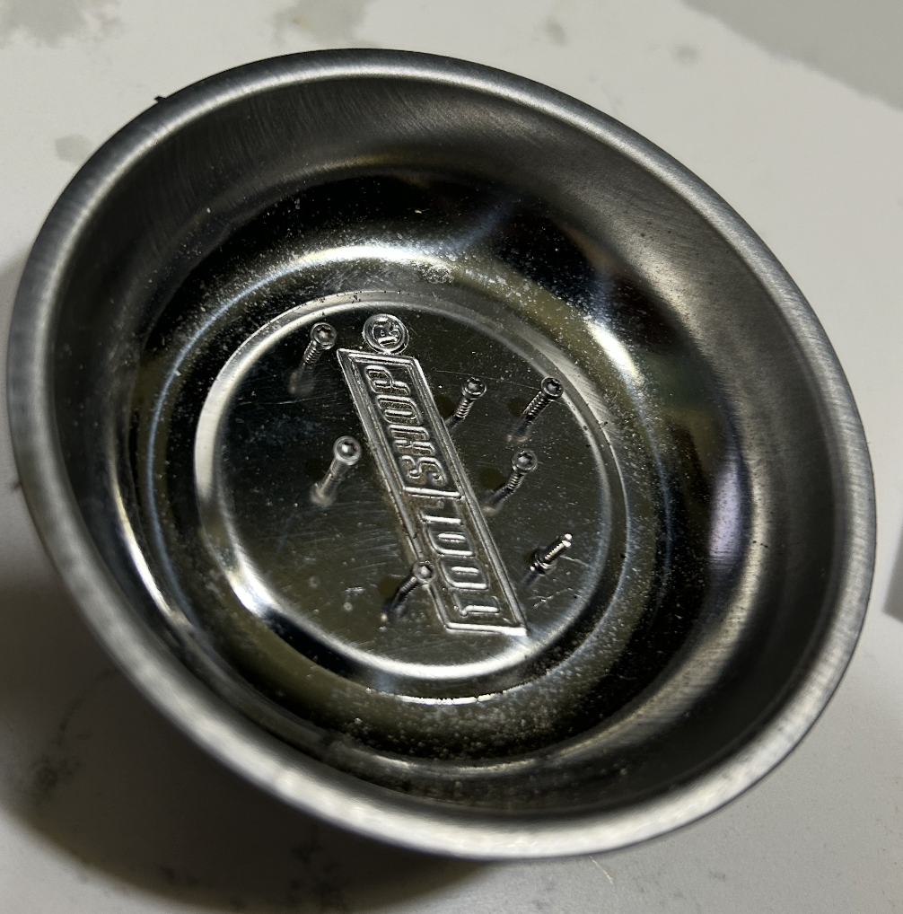
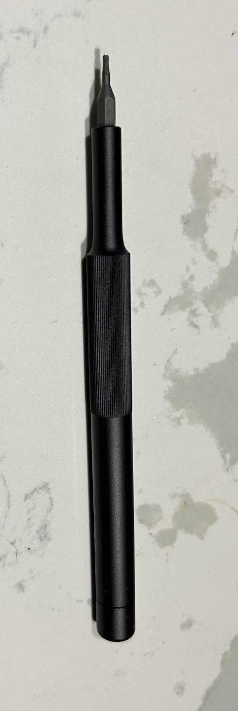
For organizing the screw and components, Magnetic Parts Holder is useful. It helps to keep the screws and components organized and prevents them from getting lost. A hyper touch precision screwdriver with size T5H that has magnetic tip is useful for opening the screws of the Nokia 3210.
The first step in the teardown process is to remove the back cover of the phone. This can be done by using a screwdriver to remove the screws that hold the back cover in place. Once the screws are removed, you can gently pry open the back cover using a plastic opening tool or your fingers.
Physical teardown: what we see first
External features: screen, keypad, camera, USB-C, speaker holes
Once we unscrew the back cover, we can see the internal components of the Nokia 3210. The first thing we see is the battery, which is a removable lithium-ion battery. The battery is responsible for providing power to the phone and it can be easily replaced.
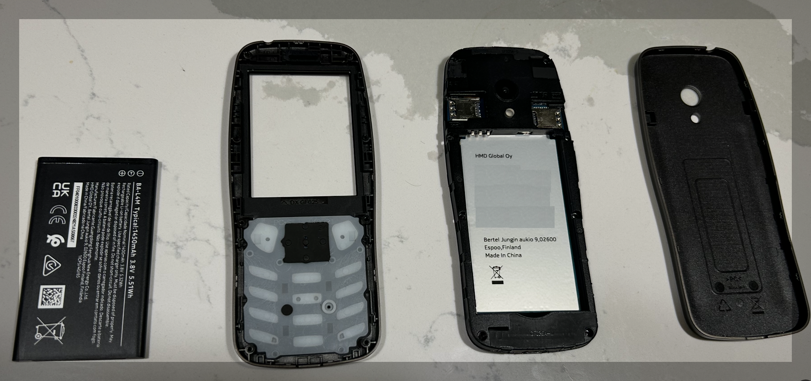
Back cover, battery, keypad cover, and main PCB
The second is the keypad cover, which is a plastic cover that protects the keypad. The keypad is responsible for allowing the user to input numbers and text. The third is the main circuit board, which is the heart of the phone. The main circuit board contains the microprocessor, memory, and other components that are responsible for the phone’s functionality. The main circuit board is responsible for processing the user’s input, managing the phone’s resources, and controlling radio communication. The fourth is the back cover of the phone with a camera, speaker and microphone outlet.
Full component map of the phone
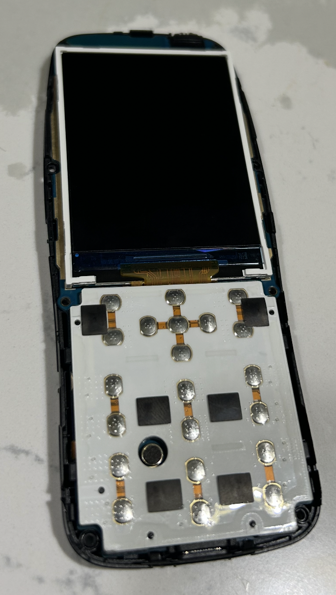
User interface hardware
In this, you can see the front cover of the phone with the keypad removed, which allows us to see the internal components of the phone. The first thing we notice is the Keypad Membrane. The silver/metallic domes are called tactile metal domes or snap domes. Each one is a small, springy stainless steel disc with a slight upward curve. When you press a key on the front of the phone, the corresponding dome collapses downward with a satisfying “click.”
Keypad membrane and metal domes
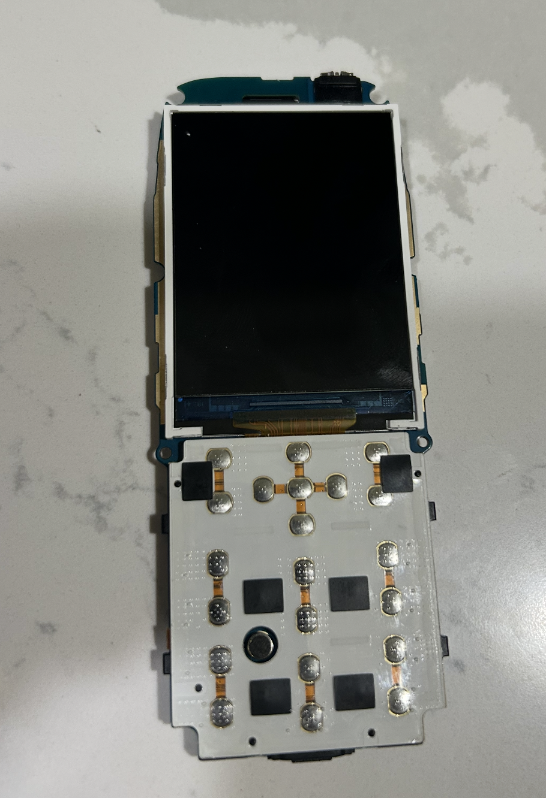
The orange/copper flexible strips running between the domes: These are flexible printed circuit (FPC) traces, forming the keypad matrix. They route the electrical connections from each dome back to the main PCB. The cross-shaped orange pattern at the top is particularly distinctive. We also see the five-way navigation pad. The black square pads are conductive rubber pads. The small circular component in the middle-left area, the dark cylinder is the vibration motor.
LCD display and ribbon connector
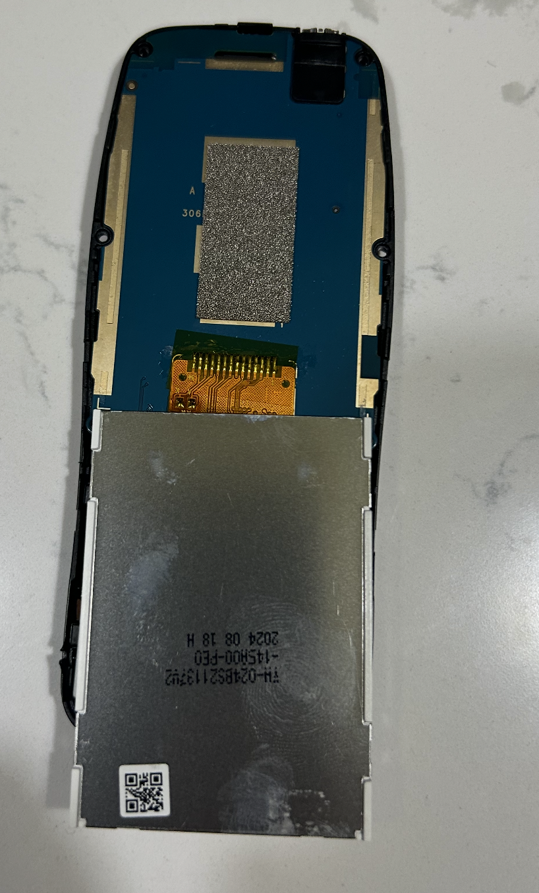
We have a tiny eccentric rotating mass (ERM) motor that creates haptic feedback. The phone vibrates by spinning an off-center weight rapidly. You can see it’s mounted directly on the keypad PCB. The tiny dotted patterns inside some of the dome circles are the PCB contact pads: two concentric conductive rings, an outer ring and a center dot, that the metal dome shorts together when pressed.
The phone uses a matrix scanning approach. If we have one wire per key, that would require lot of GPIO pins for a keypad. We’d require more than twelve. The keys are arranged in a grid of rows and columns.
The processor rapidly scans by energizing one row at a time and checking which columns show a connection. When you press a key, it shorts a specific row to a specific column, and the processor decodes which key from that intersection. This is a common technique to reduce the number of GPIO pins needed for a large keypad.
Main PCB and computing system
This is the heart of the Nokia phone. There are lot of components that need to be explained, and how they all work together. The first thing we notice is the large display panel.
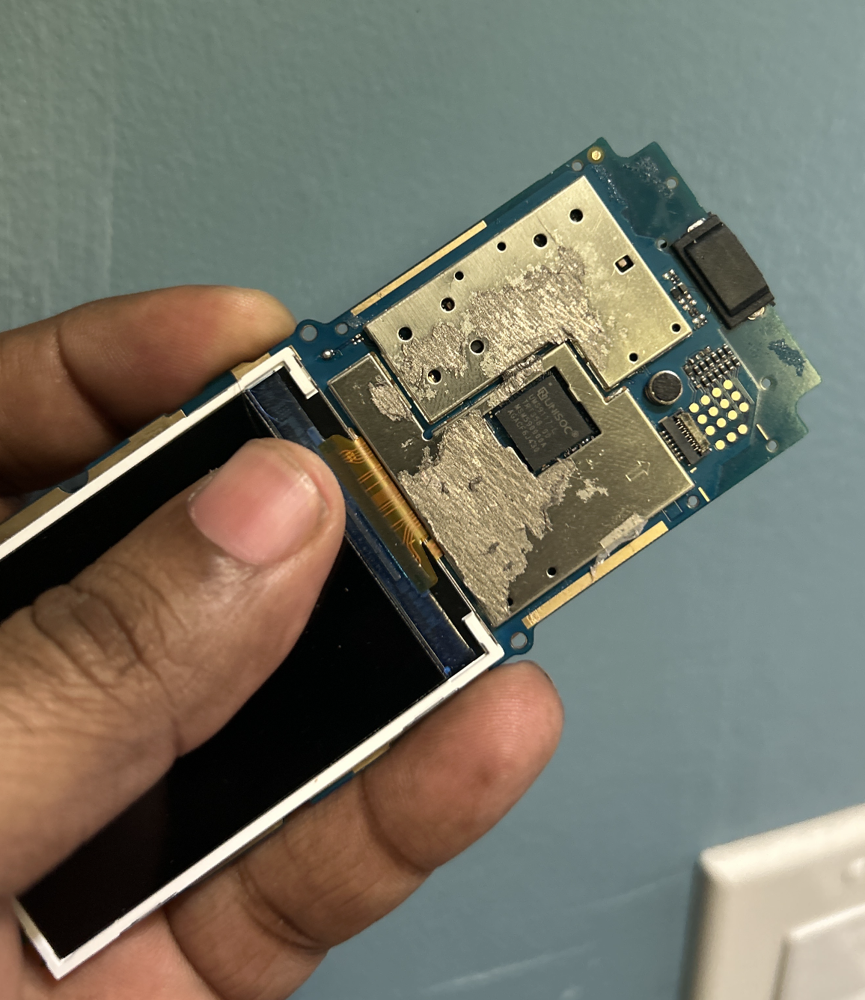
The PCB as the heart of the phone
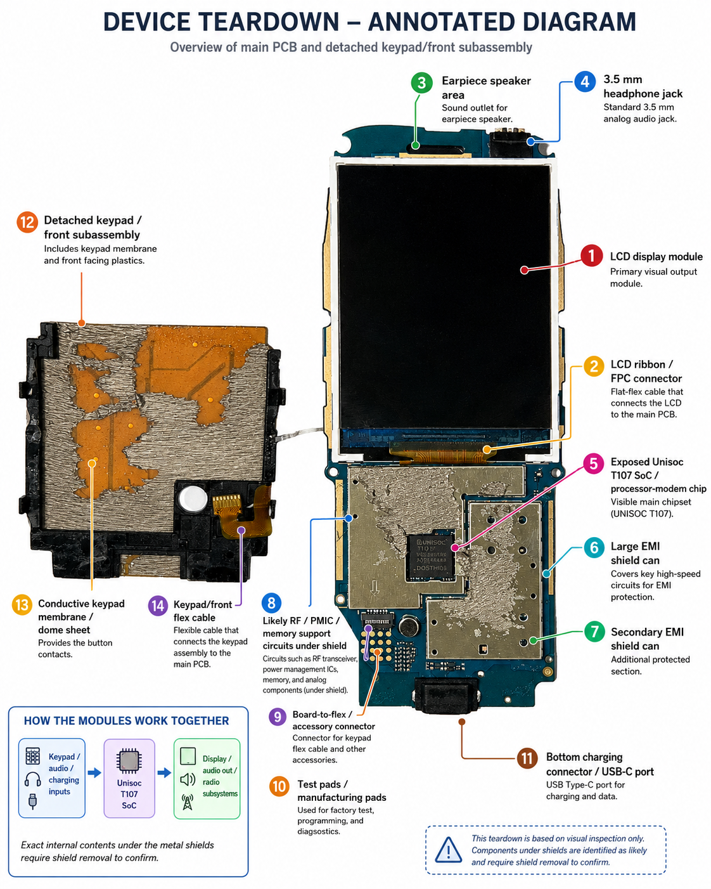
It’s a TFT LCD, 2.4-inch QVGA (240×320 pixel) color display. So, the 2.4 is diagonal size of the display, measured corner to corner. Thin Film Transistor Liquid Crystal Display are active matrix screens.
In this, each pixel on a TFT screen has its own transistor, allowing for faster response times, higher contrast, and richer colors. Quarter Video Graphics Array is the resolution, 240 pixels horizontally and 320 pixels vertically. So, this resolution is high enough to produce crisp text and detailed images. In total, the screen has 240 columns × 320 rows, which is 76,800 pixels.
How does it functionally work?
For example, we want to display the Snake game on the screen.
On a high-level, The process involves multiple components working together:
Application processor / display controller says: “Put this color at pixel location x,y”
Display driver converts that into: “Turn this row on, send voltage to this column”
TFT transistor at pixel receives voltage: “Allow more or less backlight through red/green/blue filters”
Our eye sees:Menu, numbers, Snake, icons, photos
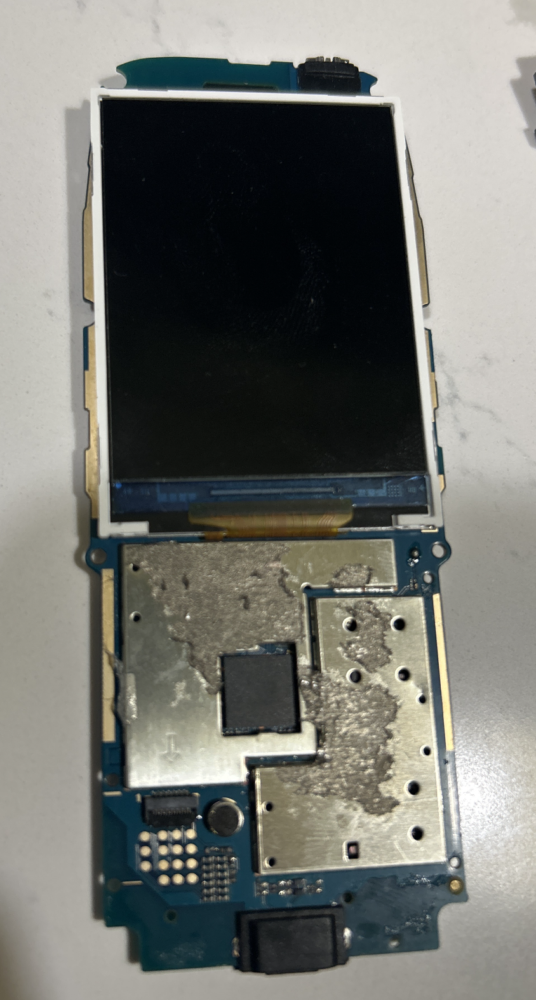
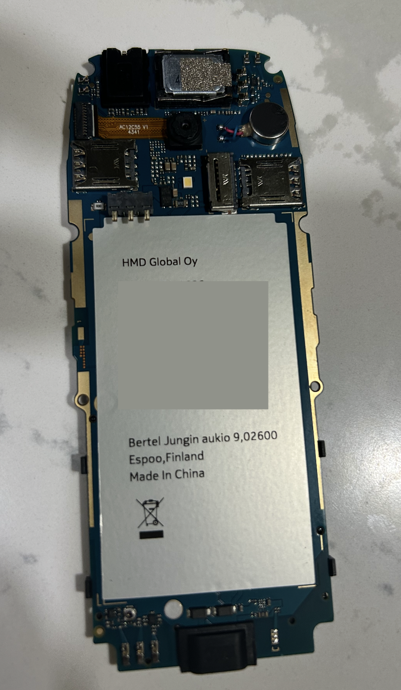
Unisoc T107 System-on-Chip
The main digital chip on the Nokia 3210 4G motherboard is the Unisoc T107. This chip is the phone’s central hardware platform. It is not just a CPU. It is a system-on-chip, or SoC, which means that several major phone functions are integrated into one chip.
In a desktop computer, the CPU, memory controller, graphics hardware, communication hardware, and input/output controllers may exist as separate chips or modules. In a small mobile phone, space, battery life, cost, and heat are much more restricted. So these functions are combined into one compact chip.
The ARM Cortex-A7 is the CPU core inside the Unisoc T107. It runs the phone software: menus, contacts, dialing screen, settings, games, camera app, and other user-facing tasks. But the Cortex-A7 does not do all phone operations by itself. Around it are specialized hardware blocks for cellular communication, memory access, display output, camera input, audio, SIM communication, USB, and keypad control.
Hardware hierarchy
The phone is the complete device. The PCB is the physical board that holds the components. The Unisoc T107 is the main chip mounted on the board. The ARM Cortex-A7 is the CPU core inside the Unisoc T107. Inside the CPU core are smaller execution structures such as the pipeline, cache, floating-point unit, interrupt system, and bus interface.
Functional blocks inside the SoC
Instead of treating the Unisoc T107 as one mysterious black box, it is better to understand it as a compact hardware platform made of four major functional domains: compute, cellular communication, media interfaces, and external I/O control.
%%{init: {
"theme": "base",
"themeVariables": {
"fontSize": "28px",
"fontFamily": "Arial"
},
"flowchart": {
"nodeSpacing": 45,
"rankSpacing": 55,
"curve": "basis"
}
}}%%
flowchart TB
SOC["Unisoc T107<br/>System-on-Chip"]
COMPUTE["Compute subsystem"]
CELLULAR["Cellular subsystem"]
MEDIA["Media subsystem"]
IO["I/O and control subsystem"]
SOC --> COMPUTE
SOC --> CELLULAR
SOC --> MEDIA
SOC --> IO
COMPUTE --> CPU["ARM Cortex-A7 CPU"]
COMPUTE --> MEM["Memory controller"]
COMPUTE --> SYS["System control<br/>clocks, interrupts, reset"]
CELLULAR --> MODEM["4G LTE modem<br/>baseband processor"]
CELLULAR --> SIM["SIM interface"]
MEDIA --> DISP["Display controller"]
MEDIA --> CAM["Camera interface"]
MEDIA --> AUD["Audio interface"]
IO --> USB["USB interface"]
IO --> GPIO["GPIO / keypad control"]
classDef soc fill:#dbeafe,stroke:#1d4ed8,stroke-width:3px,color:#0f172a,font-size:20px;
classDef domain fill:#ecfdf5,stroke:#047857,stroke-width:2px,color:#064e3b,font-size:18px;
classDef block fill:#f8fafc,stroke:#334155,stroke-width:1.5px,color:#0f172a,font-size:16px;
class SOC soc;
class COMPUTE,CELLULAR,MEDIA,IO domain;
class CPU,MEM,SYS,MODEM,SIM,DISP,CAM,AUD,USB,GPIO block;
The diagram should be read in layers. The Unisoc T107 is the complete SoC. Inside it, the hardware is organized into subsystems. The compute subsystem runs software and manages memory. The cellular subsystem handles network communication and SIM authentication. The media subsystem moves image, display, and audio data. The I/O and control subsystem connects the chip to USB, buttons, and small control signals on the motherboard.
| Subsystem | Hardware block | Role |
|---|---|---|
| Compute subsystem | ARM Cortex-A7 CPU | Runs the operating system, menus, settings, dialing screen, games, and application logic. |
| Compute subsystem | Memory controller | Connects the processor and internal hardware blocks to RAM and flash storage. |
| Compute subsystem | System control | Coordinates clocks, interrupts, reset behavior, and internal chip control. |
| Cellular subsystem | 4G LTE modem / baseband | Handles cellular protocol processing, voice-call signaling, network registration, and mobile data. |
| Cellular subsystem | SIM interface | Communicates with the SIM card for subscriber identity and authentication. |
| Media subsystem | Display controller | Sends pixel data and timing signals to the LCD screen. |
| Media subsystem | Camera interface | Receives digital image data from the camera sensor. |
| Media subsystem | Audio interface | Routes digital audio between the microphone path, speaker path, codec, and modem. |
| I/O and control subsystem | USB interface | Handles USB-C connection detection, data communication, and charger-related signaling. |
| I/O and control subsystem | GPIO / keypad control | Reads physical button presses and controls small electrical signals on the motherboard. |
What does each block do?
| Hardware block | Technical role |
|---|---|
| ARM Cortex-A7 CPU core | Executes software instructions for the user interface, menus, dialing screen, settings, games, and applications. |
| 4G LTE modem / baseband | Handles cellular protocol processing for voice calls, network registration, signaling, and mobile data. |
| Memory controller | Connects the CPU and internal hardware blocks to RAM and flash storage. |
| Display controller | Sends pixel data and timing signals to the LCD screen. |
| Camera interface | Receives image data from the camera sensor and passes it into the digital processing pipeline. |
| Audio interface | Moves digital audio between the microphone path, speaker path, codec, and modem. |
| SIM interface | Communicates with the SIM card for subscriber identity and network authentication. |
| USB interface | Handles USB-C connection detection, data communication, and charger-related signaling. |
| GPIO / keypad control | Reads physical button presses and controls small electrical signals on the motherboard. |
Why does this matter?
The Unisoc T107 is the heart of the phone because many ordinary phone actions pass through it.
%%{init: {
"theme": "base",
"themeVariables": {
"fontSize": "19px",
"fontFamily": "Arial"
},
"flowchart": {
"nodeSpacing": 55,
"rankSpacing": 65
}
}}%%
flowchart TB
A["You press a key"] --> B["Keypad / GPIO interface detects signal"]
C["Screen changes"] --> D["Display controller sends pixels to LCD"]
E["You make a call"] --> F["Modem and RF system handle cellular communication"]
G["You open the camera"] --> H["Camera interface receives image data from sensor"]
classDef event fill:#f8fafc,stroke:#334155,stroke-width:2px,color:#0f172a,font-size:18px;
class A,B,C,D,E,F,G,H event;
The Cortex-A7 CPU coordinates the software side of these actions. However, the specialized hardware blocks perform the lower-level work more efficiently. This division of labor is what makes a small, low-power phone possible.
Engineering summary
The Cortex-A7 is the instruction-running CPU core.
The Unisoc T107 is the full SoC platform that integrates CPU, modem, memory, display, camera, audio, SIM, USB, and control interfaces.
The Nokia 3210 4G behaves like a phone because the CPU and these specialized hardware blocks work together.
ARM Cortex-A7 CPU Core
The ARM Cortex-A7 is the application processor core inside the Unisoc T107. It is the part of the chip that executes normal program instructions: menus, contacts, dialing screens, settings, games, SMS handling, camera application logic, and other user-facing software.
The important distinction is that the Cortex-A7 is only the CPU core, while the Unisoc T107 is the complete system-on-chip platform. The T107 contains the Cortex-A7 CPU core along with the modem, memory controller, display interface, camera interface, audio interface, SIM interface, USB interface, and other control logic.
CPU core vs. full chip
The Cortex-A7 runs program instructions.
The Unisoc T107 is the full chip platform that surrounds the CPU with communication, media, memory, and control hardware.
ARM designed the Cortex-A7 as a small, low-power application processor core for compact and cost-sensitive devices. Chip companies such as Unisoc can license this CPU design and integrate it into their own system-on-chip products.
| Design goal | Meaning in a phone |
|---|---|
| Low power | Helps preserve battery life during normal phone use. |
| Small silicon area | Reduces chip size and manufacturing cost. |
| Adequate application performance | Good enough for menus, settings, calling, SMS, simple apps, and basic multimedia. |
| Embedded-device suitability | Useful for feature phones, entry-level smartphones, routers, and compact connected devices. |
Where does the Cortex-A7 sits in the phone?
%%{init: {
"theme": "base",
"themeVariables": {
"fontSize": "18px",
"fontFamily": "Arial"
},
"flowchart": {
"nodeSpacing": 45,
"rankSpacing": 55
}
}}%%
flowchart LR
PHONE["Nokia 3210 4G<br>complete device"]
PCB["Main PCB<br>motherboard"]
SOC["Unisoc T107<br>system-on-chip"]
CPU["ARM Cortex-A7<br>CPU core"]
PHONE --> PCB --> SOC --> CPU
classDef block fill:#f8fafc,stroke:#334155,stroke-width:2px,color:#0f172a,font-size:17px;
classDef cpu fill:#dbeafe,stroke:#1d4ed8,stroke-width:3px,color:#0f172a,font-size:18px;
class PHONE,PCB,SOC block;
class CPU cpu;
The phone is the complete device. The PCB is the physical motherboard. The Unisoc T107 is the main SoC mounted on that board. The ARM Cortex-A7 is the CPU core inside the SoC.
ARM Cortex-A7 reference architecture
The figure below shows the internal architecture of the ARM Cortex-A7 processor design. This is not a full diagram of the Unisoc T107 chip. Instead, it shows the CPU core design that companies such as Unisoc can integrate into their own SoCs.
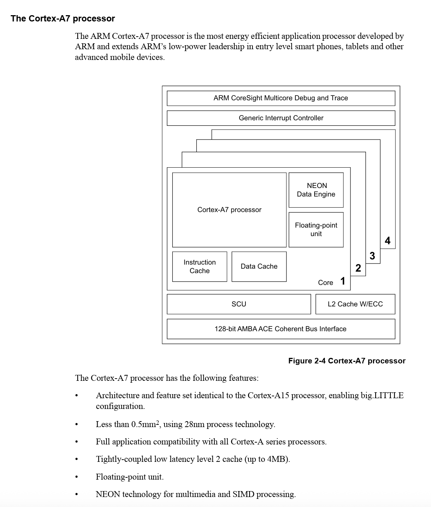
The image shows the Cortex-A7 as a processor core with instruction handling, cache, execution units, NEON support, memory interface logic, and connections to the rest of the chip. Some ARM reference diagrams show Cortex-A7 in multi-core configurations. For this phone teardown, the key point is simpler: the Cortex-A7 processor is the CPU building block inside the Unisoc T107 platform.
What does the Cortex-A7 do?
The Cortex-A7 is where normal program instructions run. When the phone shows a menu, opens contacts, reads SMS, responds to a key press, or launches the camera application, the Cortex-A7 is executing software instructions.
At a simplified level, the CPU repeatedly performs this cycle:
%%{init: {
"theme": "base",
"themeVariables": {
"fontSize": "18px",
"fontFamily": "Arial"
},
"flowchart": {
"nodeSpacing": 40,
"rankSpacing": 45
}
}}%%
flowchart LR
A["Fetch<br>instruction"]
B["Decode<br>instruction"]
C["Read<br>registers"]
D["Execute<br>operation"]
E["Access memory<br>if needed"]
F["Write<br>result"]
A --> B --> C --> D --> E --> F
classDef step fill:#f8fafc,stroke:#334155,stroke-width:2px,color:#0f172a,font-size:17px;
class A,B,C,D,E,F step;
This is called the fetch-decode-execute cycle. The CPU fetches an instruction from memory, decodes what the instruction means, reads the required values, performs the operation, accesses memory if necessary, and writes the result back.
Example: pressing a key
When a physical key is pressed, the Cortex-A7 is involved, but it is not the only hardware block doing work.
%%{init: {
"theme": "base",
"themeVariables": {
"fontSize": "18px",
"fontFamily": "Arial"
},
"flowchart": {
"nodeSpacing": 45,
"rankSpacing": 55
}
}}%%
flowchart TB
A["Keypad dome<br>closes circuit"]
B["GPIO / keypad controller<br>detects electrical signal"]
C["Cortex-A7<br>runs software logic"]
D["Display controller<br>updates LCD screen"]
A --> B --> C --> D
classDef hardware fill:#f8fafc,stroke:#334155,stroke-width:2px,color:#0f172a,font-size:17px;
classDef cpu fill:#dbeafe,stroke:#1d4ed8,stroke-width:3px,color:#0f172a,font-size:18px;
class A,B,D hardware;
class C cpu;
The keypad hardware detects the electrical change. The Cortex-A7 runs the software logic that decides what the key press means. The display controller updates the LCD if the user interface changes.
Example: making a call
During a phone call, the Cortex-A7 mainly handles software control. It manages the dialer interface, contact selection, call status, audio routing decisions, and coordination with the modem. The specialized cellular work is handled by the baseband modem, RF front-end, and antenna system.
%%{init: {
"theme": "base",
"themeVariables": {
"fontSize": "18px",
"fontFamily": "Arial"
},
"flowchart": {
"nodeSpacing": 45,
"rankSpacing": 55
}
}}%%
flowchart TB
A["Cortex-A7<br>runs call UI and control software"]
B["Baseband / modem<br>handles cellular protocol"]
C["RF front-end<br>converts signal for radio transmission"]
D["Antenna<br>communicates with cell tower"]
A --> B --> C --> D
classDef cpu fill:#dbeafe,stroke:#1d4ed8,stroke-width:3px,color:#0f172a,font-size:18px;
classDef hardware fill:#f8fafc,stroke:#334155,stroke-width:2px,color:#0f172a,font-size:17px;
class A cpu;
class B,C,D hardware;
This division of labor is important. The Cortex-A7 does not personally perform the entire phone call. It runs the software that coordinates the call, while the modem and RF hardware perform the specialized communication work.
Internal CPU functions
Inside the Cortex-A7, several internal units work together to execute instructions efficiently.
| CPU component | Role |
|---|---|
| Instruction fetch logic | Reads program instructions from memory or instruction cache. |
| Instruction decoder | Interprets what each instruction asks the CPU to do. |
| Register file | Holds small, fast working values used by instructions. |
| Integer execution unit | Performs arithmetic, logic, comparison, and address-calculation operations. |
| Load/store unit | Moves data between CPU registers, cache, and memory. |
| Branch unit | Handles jumps, loops, function calls, and conditional program flow. |
| Interrupt handling logic | Allows the CPU to respond to timers, key presses, hardware signals, and other events. |
| Bus interface | Connects the CPU core to the rest of the SoC. |
The Cortex-A7 is an in-order CPU core. This means it generally executes instructions in the order they arrive, instead of aggressively reordering them like larger high-performance processors. This makes the design smaller, cheaper, and more power-efficient, which fits a feature phone well.
Instruction cache and data cache
The Cortex-A7 uses caches to reduce the time spent waiting for memory. A cache is a small, fast memory located close to the CPU.
| Cache type | What it stores | Example in a phone |
|---|---|---|
| Instruction cache | Recently used program instructions | Code for the menu system, dialer, SMS app, or settings screen. |
| Data cache | Recently used data values | Contact names, SMS text buffers, menu variables, battery percentage values, or display-related data. |
The CPU separates instruction and data caching because it often needs to fetch program instructions and access data at the same time. Keeping these paths separate improves efficiency.
NEON data engine
The Cortex-A7 also includes ARM’s NEON data engine. NEON is a SIMD unit, meaning Single Instruction, Multiple Data.
Instead of applying one operation to one value at a time, SIMD allows the CPU to apply one instruction to several values together. This is useful for repeated operations over arrays of data.
Examples include:
- audio processing,
- image processing,
- simple multimedia operations,
- signal processing,
- compression or decompression routines.
For a basic feature phone, NEON is not used in the same way as in a powerful smartphone. But it gives the CPU a more efficient way to handle certain media and signal-processing tasks.
Engineering summary
The Cortex-A7 is the CPU core that executes software instructions.
It is optimized for low power, small size, and sufficient performance, not maximum speed.
The Unisoc T107 surrounds the Cortex-A7 with specialized hardware blocks for cellular communication, display, camera, audio, memory, SIM, USB, and keypad control.
The phone works because the Cortex-A7 runs the control software while the rest of the SoC performs specialized hardware tasks.
How a Cortex-A7 SoC Works: NEON, SCU, Cache, AMBA Bus, and GIC?
In the phone, NEON helps with Audio decoding, Image processing, Camera data, Simple graphics, Signal-processing style math, Multimedia operations. So, basic multimedia and efficient data processing. A FPU or Floating-point unit, handles decimal-style math, -7.21, 0.25, Without an FPU, floating-point calculations would be emulated in software and would be much slower. Snoop Control Unit (SCU) maintains data cache coherency between cores, Arbitrates access when multiple cores want L2/memory at the same time, Handles cache-line ownership and transfer between cores more efficiently than always going to main memory. Main memory is much slower than cache. If core A writes data and core B later reads the same address, the SCU helps B get the newest value from A’s cache or invalidates old copies, instead of waiting for memory traffic to propagate slowly. The SCU is about data coherency, not instruction-cache coherency.
The L2 cache with ECC is used to make the ARM processor both faster and more reliable, ECC means Error-Correcting Code. It is a method used in memory and caches to detect and often fix bit errors automatically. Imagine the L2 cache stores a number: 8, Later, one tiny bit flips by accident, and the number becomes 9 instead of 8, Without ECC: the CPU reads 9 and thinks it is correct, With ECC: the cache notices, “this stored value doesn’t match the check bits,” and fixes it back to 8 before the CPU uses it. The L2 cache is a larger shared cache. The 128-bit AMBA ACE coherent bus interface, is the internal highway connecting the Cortex-A7 CPU cluster to the rest of the SoC.
The CPU core needs to communicate with:
- RAM controller
- Flash/storage controller
- Display controller
- Camera interface
- USB controller
- SIM controller
- Audio controller
- Modem/baseband blocks
- Interrupt controller
- DMA engines
AMBA bus
AMBA bus flow in Cortex-A7 CPU is
Cortex-A7 CPU
↓
L1 / L2 cache
↓
AMBA bus
↓
Memory, display, camera, USB, SIM, audio, modemGeneric Interrupt Controller (GIC)
Generic Interrupt Controller, or GIC, is the hardware block that decides which interrupt goes to which CPU core and in what priority order. It receives interrupts from peripherals like timers, UARTs, and GPIOs. It prioritizes them. It delivers them to the right core. In multi-core Cortex-A7 systems, it can send an interrupt to one core, both cores, or a specific target core. Without a GIC, every interrupt source would have to be handled in a much more ad hoc way. The GIC gives the processor a standard way to manage, Shared Peripheral Interrupts for devices used by the whole chip, Private Peripheral Interrupts for each core, Software Generated Interrupts for inter-core signaling. We can think the GIC as Traffic controller.
Cortex-A7 can be less than 0.5 mm² on 28 nm. This means, the physical chip area needed for one Cortex-A7 core can be less than half a square millimeter when manufactured on a 28 nm process, 0.5 mm² is an area measurement, not performance, 28 nm refers to the manufacturing technology node, which affects how small transistors and wiring can be made.
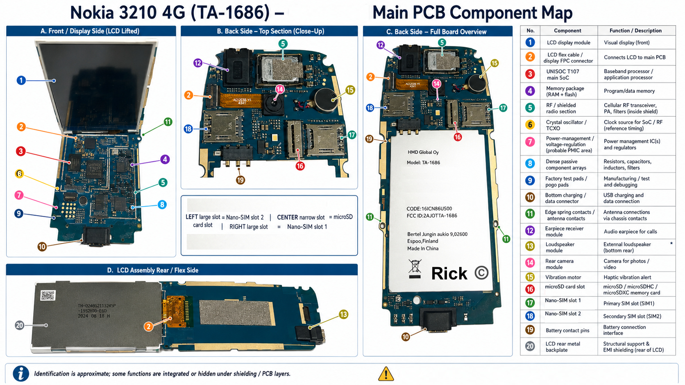
Memory: flash, RAM, firmware, storage
The Unisoc T107 baseband processor doesn’t include the flash and RAM on the same die. However its memory controllers are built to talk to external memory chips sitting next to it on the board. The Cortex-A7 core executes instructions, and these instructions have to come from somewhere, the data it works on has to live somewhere. That somewhere is memory, and on the Nokia 3210 it comes in three tiers: 64 MB of LPDDR2 SDRAM, 128 MB of internal flash storage, and an optional microSDHC card up to 32 GB.
Flash is non-volatile and keeps the data alive even when the phone turns off. In this, the phone’s firmware lives: the operating system (MOCOR with the Series 30+ interface on top), the dialer, the menus, the Snake game, the ringtones. Personal data also goes here: contacts, text messages, call history, settings, and any photos the camera takes. The T107 supports eMMC 5.1 as its mass-storage interface, essentially managed NAND flash, where raw NAND dies and a built-in controller (handling wear leveling, bad-block management, and ECC) sit together in one BGA package speaking a standardised command protocol. At 128 MB the 3210 is at the very low end of this spectrum, and may use a simpler raw NAND or NOR arrangement, but the SoC’s flash path is built around eMMC.
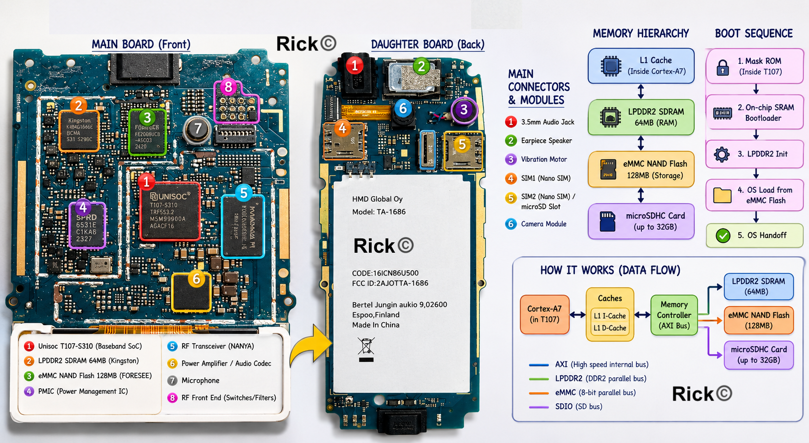
A small note on flash types, because it matters historically. NOR flash is byte-addressable and supports execute-in-place: the CPU can fetch instructions directly from it without copying to RAM first. It is slow to write and expensive per bit, but fast and reliable to read randomly. NAND flash is page-addressable, typically 2 KB or 4 KB pages, much denser and cheaper, but you cannot execute code directly from it, code must first be copied into RAM. The original 1999 Nokia 3210 used NOR and ran code straight from it. The 2024 phone, with 128 MB of storage, almost certainly uses NAND, which is why the boot sequence has to copy the OS into RAM before it can run.
RAM is volatile: the moment power is lost, everything in it vanishes. Specifically, this is LPDDR2 SDRAM: Low-Power DDR2 running at 1.2 V with deep power-down states that ordinary desktop DDR doesn’t have. The T107’s memory controller can address up to 384 MB of LPDDR2 in theory; the 3210 is wired with 64 MB. When the phone boots, code is copied out of flash and into this RAM so the CPU can run it quickly.
While the phone is running, RAM holds everything the software is actively using: the variables of the program currently executing, the contact entry you are scrolling through, the text buffer of the SMS you are typing, the position of the Snake on screen, and the frame buffer, the block of memory holding the exact image currently being shown on the display.
The Cortex-A7 does not talk to the memory chips directly. Requests travel out of the core over an AMBA AXI interface: AXI being the high-bandwidth variant of AMBA used for memory traffic, to separate, specialised controllers sitting as AXI slaves on the interconnect. The DRAM controller and the eMMC/flash controller are physically distinct blocks on the T107 die, and they speak completely different protocols downstream.
The DRAM controller issues row-activate, column-read, precharge, and refresh commands on a parallel address/data/command bus to the LPDDR2 die. The eMMC controller issues CMD/DATA packets over an 8-bit parallel bus with its own clock. The microSD card has yet a third controller, an SDIO/SD host, talking over the SD bus protocol. Each memory type speaks a different language, and the SoC has a dedicated translator for each.
There is also a speed hierarchy at work here. The Cortex-A7 has an L1 instruction cache and L1 data cache: each configurable by the SoC vendor between 8 KB and 64 KB, and on a low-cost feature-phone SoC likely sitting near the smaller end. L2 cache on the Cortex-A7 is optional and may not be present at all on a single-core 1 GHz part like the T107.
The system constantly tries to keep whatever the CPU needs next as close to the core as possible, so a value moves L1 cache → LPDDR2 SDRAM → internal NAND/eMMC flash → microSD card in order of increasing size and decreasing speed. It is also worth noting that the Cortex-A7 is an in-order, 8-stage pipeline core: unlike the out of order cores in modern smartphones, it executes instructions in program order. This is one reason it is so power-efficient and so small (around 0.45 mm² at 28 nm), and why it remains the workhorse of feature-phone SoCs more than a decade after its 2011 launch.
When you press the power button, the PMIC brings up the voltage rails in order and releases the processor from reset. The Cortex-A7 does not begin by running the operating system, it begins by running a tiny mask ROM bootloader baked permanently into the T107 silicon during fabrication. This ROM code knows how to talk to the flash interface, validates a signature on the next-stage bootloader, copies that bootloader into on-chip SRAM: a small scratch RAM inside the SoC itself, not the external LPDDR2, and jumps to it.
The second-stage bootloader then initialises the LPDDR2 controller, which is itself a non-trivial dance involving training the DRAM timings against the specific memory die on the board. Only then can it copy the OS from flash into main RAM. Control passes to the OS, the display is initialised, and the phone’s menu appears. The full chain is mask ROM → on-chip SRAM bootloader → LPDDR2 init → OS load → OS handoff, and it is also the chain that secure boot hooks into, since each stage can cryptographically verify the next before passing control.
From that point on, every action you take is a conversation between these parts, the CPU executes code in RAM, reaches into flash when it needs something stored, and writes back to flash whenever you save a contact or receive a message.
Cellular communication system
A mobile phone is not only a computer, it is also a radio communication device. The cellular system connects the SIM, modem, RF transceiver, power amplifier, filters, antenna switch, TCXO, and antenna so that the phone can register on a network, make calls, send messages, and exchange mobile data.
SIM Card Interface
There are two SIM card slots, that we can use. The SIM, Subscriber Identity Module is a small, removable smart card, and it is what gives the phone its identity on the network. The phone hardware is just hardware; it is the SIM that says who the subscriber is. Without it, the phone can power on, run its menus, and play Snake, but it cannot register on a cellular network or make a normal call.
How SIM authentication works?
Inside that small card is actually a tiny computer of its own, a microcontroller with its own processor, its own small memory, and a secure storage area. It stores the IMSI (International Mobile Subscriber Identity, the unique number identifying the subscriber), a secret authentication key that never leaves the card, and often contacts and SMS messages. The Unisoc T107 has a built-in SIM interface, and the SIM connects to it through a small set of contact pads, power, ground, clock, reset, and a single data line.
The most important idea is that the SIM is actively participating in authentication, and it does so without ever revealing its secret. When the phone tries to join a network, the tower sends a random challenge number. The phone passes that challenge to the SIM. The SIM runs the challenge together with its hidden key through a cryptographic calculation and returns a response. The network performs the same calculation independently, and if the two responses match, the phone is allowed on. Because the secret key never leaves the card and is never transmitted, the network can confirm the phone is genuine without that key ever being exposed. This is also what makes a SIM portable, move the card to another phone and your identity and number move with it, because the identity was always in the card, not the handset
RF and Antenna System
The Radio-Front end in the Baseband processor allows to bridge the gap between modem and physical antennas. RF transceiver IC is the bridge between airwaves and digital world. On the receiving path, it takes the faint antenna signal, mixes it down from gigahertz frequencies to a low frequency the converters can handle and digitizes it.
On the transmit path it does the reverse, turning the baseband’s digital data into a modulated radio signal. Next to this, We’d find a Power amplifier, which boosts the transmit signal to up to a couple of watts so it can reach a distant cell tower, and the antenna switch or front-end module, which routes signals between the antenna, the PA, and the various receive filters for different frequency bands.
There’s also SAW filter, Surface Acoustic Wave, which converts an electrical radio signal into a tiny mechanical vibration, filters it in that mechanical domain, then converts it back to electrical. Inside it is a slab of piezoelectric material, and at one end is interdigital transducer. It’s function is to reject everything except the wanted band. The antenna picks up every signal in the air, other cell bands, Wi-Fi, FM radio, the phone’s own powerful transmit signal leaking back. The SAW filter sits in the receive path and passes only the narrow slice of spectrum the phone is actually trying to listen to.
RF transceiver, power amplifier, SAW filter, and TCXO
Next, we have Temperature-Compensated Crystal Oscillator, a temperature-compensated crystal oscillator that provides the ultra stable reference frequency the whole radio is locked to. Without that stable reference, the phone literally couldn’t find or stay on a channel.
Power Management IC, this is an important component. Different modules in the phone require their own voltage rails, the processor might want 1.2 v, the memory 1.8 V, the RF section 2.8 V. The battery delivers voltage that might fluctuate. The PMIC has regulators switching converters and linear LDOs (Low-Dropout regulators), generate all these rails, plus it manages battery charging, monitors battery voltage and temperature, and sequences power-up so chips turn on in the correct order
Audio System
The baseband processor and modem inside the SoC can only work with digital numbers, but voice is an analog signal, continuous waves of sound pressure in the air. The phone needs a converter that goes both directions, which is exactly what a codec (coder/decoder) does.
Three pieces of the audio system
- Transducers:Physical devices that convert between sound and electricity. The earpiece speaker sits at the top of the board, the loudspeaker at the bottom, and the microphone picks up the user’s voice.
- Codec: The converter electronics. In this phone it’s split between the T107 SoC and the PMIC.
- Amplifiers: Signal boosters. A quiet one drives the earpiece, a louder one drives the loudspeaker. Both are folded into the same chips as the codec.
Outgoing audio: voice to tower
flowchart LR
A[You speak] --> B[Microphone] --> C["Codec<br/>(amplify + ADC)"]
C --> D["DSP<br/>(echo, noise, AGC)"]
D --> E[Speech codec<br/>compress]
E --> F[Baseband + modem] --> G[RF + antenna]
style A fill:#e1f5ff
style G fill:#d4edda
The microphone produces a weak analog signal. The codec amplifies it and the ADC digitizes it into numbers. The DSP then cleans it up, cancelling echo so the far end doesn’t hear themselves bounce back, suppressing background noise, and applying automatic gain control so the volume stays even whether the user whispers or shouts. The speech codec compresses the result to a low bitrate, the baseband adds error-correction coding, and the RF stage modulates and transmits it.
Incoming audio: tower to ear
flowchart LR
A[Antenna] --> B[RF demodulate] --> C[Baseband decode]
C --> D["Codec DAC<br/>(numbers → analog)"]
D --> E[Amplifier] --> F[Earpiece speaker] --> G[Your ear]
style A fill:#e1f5ff
style G fill:#d4edda
The antenna receives the radio signal, the RF transceiver demodulates it, and the baseband decodes and decompresses the audio numbers. The codec’s DAC converts them back into an analog wave, the amplifier boosts it, and the earpiece speaker turns it into sound.
Why DSP matters
Raw converted audio isn’t good enough on its own. Between the codec and the modem, digital signal processing runs, some in the codec hardware, some on the SoC’s DSP. This is where echo cancellation, noise suppression, automatic gain control, and speech compression happen. Without these steps, calls would be loud or quiet by accident, full of background hum, and too large to send efficiently over the cellular link.
Who does what
- Cortex-A7 CPU: The manager. It doesn’t touch sound samples directly. It decides whether audio routes to the earpiece or loudspeaker, applies the user’s volume setting, switches to speakerphone, mutes the mic, and plays the ringtone when a call arrives.
- Codec, DSP, and modem: The workers. They do the actual conversion, cleanup, compression, and transport.
- PMIC: Supplies the voltage rails the codec and amplifiers run on, and carries part of the codec function itself. Clean power matters here more than almost anywhere else on the board: any electrical noise on an audio amplifier’s supply rail is heard directly as buzz or hiss in the speaker. That’s why sensitive analog audio circuitry often lives inside the PMIC, which is built to deliver quiet, well-regulated power.
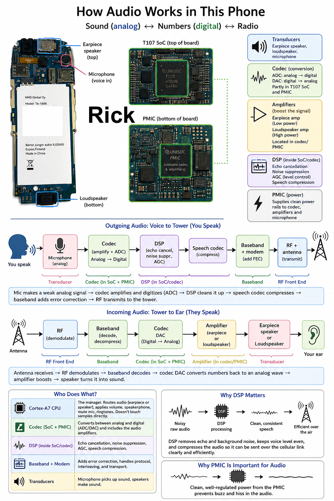
Camera System
The rear camera module is the black square component with a circular opening, the opening itself is the lens aperture. Directly below it, the small white square is most likely the LED flash. The module points outward through the back cover, so when the phone is assembled, light from the scene enters through the back camera hole and lands on this module.
Inside the camera module
Several components work together to turn light into a digital image:
- Lens :A small fixed-focus optical element at the front. It focuses light from the scene onto the image sensor. Because focus is fixed, there is no autofocus motor.
- IR-cut filter:Image sensors are sensitive to near-infrared light in addition to visible light, which distorts colors. This filter blocks infrared and passes mostly visible light through to the sensor.
- CMOS image sensor:The core camera chip. A 2 MP sensor has roughly 2 million photosensitive pixels arranged in a grid.
- Bayer color filter:A bare sensor cannot distinguish red, green, and blue. Each pixel is covered by a tiny color filter in a Bayer pattern, so color can be reconstructed during processing.
- Readout circuitry:Reads pixel charge row by row, converts it to digital values, and sends the data to the SoC.
- LED flash:Controlled by the camera software through the SoC and PMIC, fires a brief, controlled current pulse during capture when needed.
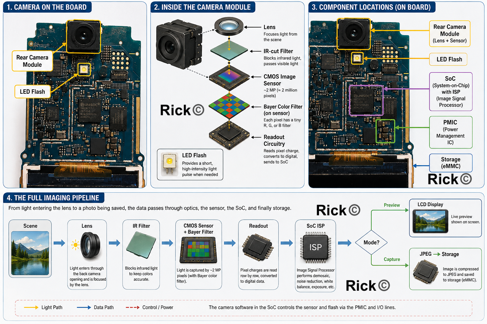
The full imaging pipeline
From light entering the lens to a photo being saved, the data passes through optics, the sensor, the SoC, and finally storage:
flowchart LR
A[Scene] --> B[Lens] --> C[IR filter] --> D[CMOS sensor] --> E[Readout]
E --> F[SoC ISP] --> G{Mode?}
G -->|Preview| H[LCD]
G -->|Capture| I[JPEG → Storage]
style A fill:#e1f5ff
style H fill:#d4edda
style I fill:#d4edda
Opening the Camera app
The camera is not always on, software has to request it, the power system has to enable it, and only then does the sensor start producing frames.
flowchart LR
A[App opens] --> B[Cortex-A7] --> C[PMIC powers rails]
C --> D[Sensor configured] --> E[Streaming] --> F[LCD preview]
style A fill:#e1f5ff
style F fill:#d4edda
The Cortex-A7 runs the UI and asks the system to power up the camera. The PMIC turns on the right voltage rails, the SoC configures the sensor, and the sensor begins streaming. Frames flow through the imaging pipeline above and land on the LCD as a live preview.
Pressing the capture key
Capture reuses the preview pipeline at full resolution, with storage as the endpoint instead of the display.
flowchart LR
A[Capture key] --> B[Keypad event] --> C[Full-res request]
C --> D[Sensor exposes] --> E[ISP runs] --> F[JPEG → microSD]
style A fill:#e1f5ff
style F fill:#d4edda
The keypad matrix registers the event, the camera app requests a full-resolution frame, the sensor exposes, the SoC processes the pixel data through the same imaging pipeline used for preview, and the finished frame is compressed (typically JPEG) and written to internal storage or microSD.
Inside image signal processing
The “SoC ISP” step in the main pipeline is itself a sequence. The raw sensor output is a grid of single-color samples that needs reconstruction and correction before it looks right.
flowchart LR
A[Raw Bayer] --> B[Black level] --> C[Demosaic] --> D[White balance]
D --> E[Color correction] --> F[Denoise] --> G[Sharpen]
G --> H[Gamma] --> I[JPEG]
style A fill:#e1f5ff
style I fill:#d4edda
Demosaicing is the most important step: because the Bayer filter means each pixel sees only one color, the processor reconstructs a full RGB image by interpolating from neighboring pixels.
System architecture
The camera module connects to the rest of the phone through a small set of well-defined interfaces — power, timing, control, and image data.
flowchart TD
CM["Camera modulePower, Clock, I2C, MIPI"]
CI[T107 camera interface]
IP["ISP + RAM"]
LCD[LCD preview]
ST[Storage]
CM --> CI --> IP
IP --> LCD
IP --> ST
Who does what
- Cortex-A7 (application CPU) — Runs the camera app and UI, handles button events, controls settings, requests capture, manages file saving. Does not manually process pixels.
- Camera sensor — Captures light and converts it into a digital signal.
- Image pipeline / hardware blocks — Process raw data, prepare preview frames, compress the final image.
- Storage controller — Writes the final file to internal storage or microSD.
Putting everything together
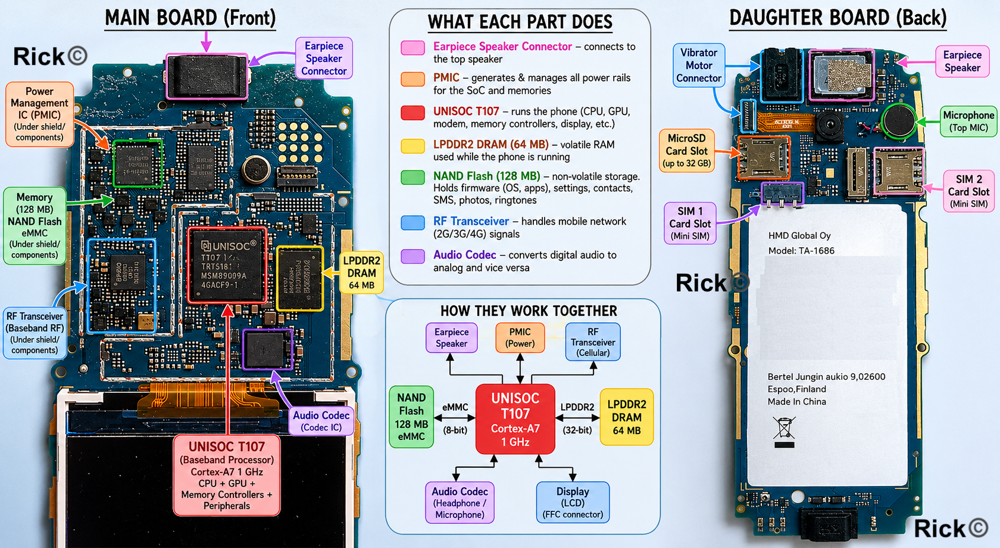
How the phone receives and sends images to the Display?
The application processor and display controller inside the SoC prepare the screen image in memory and send display data to the LCD module. The modem/baseband side is mainly responsible for cellular communication, not for drawing the user interface.
- App - Snake Game
- Operating System which draws the graphics
- Frame buffer in the RAM (SOC chip)
- LCD interface: SPI
- Display driver IC
- TFT pixel matrix
How a Display Driver IC Works?
The display driver IC is very important. It converts digital image data into electrical voltages that can scan the display rows and columns. There’s also the copper colored-ribbon cable. It’s a thin, FPC ribbon cable. The ribbon is essential. It carries the following information
- Power supply lines
- Ground
- Display data lines
- Clock/control signals
- Backlight LED power
- Reset signal
- Command/data control
On the PCB, the display ribbon plugs into a small FPC connector connected to the display interface of the SoC. There’s also the PMIC, Power manager integrated circuit, which manages all the power for the entire unit. The display receives about 2.8 V logic supply.
What happens when you make a call?
During a call, Cortex-A7 is not doing everything alone
Microphone captures voice
↓
Audio circuit converts/processes signal
↓
Baseband/modem processes cellular voice protocol
↓
RF transceiver/front-end converts to radio signal
↓
Antenna sends signal to towerThe Cortex-A7 handles control, software tasks such as
Call UI Contacts Dialing Network status Audio routing control Power management coordination
The modem/RF hardware does the specialized cellular work. Both are inside the Unisoc T107 platform.
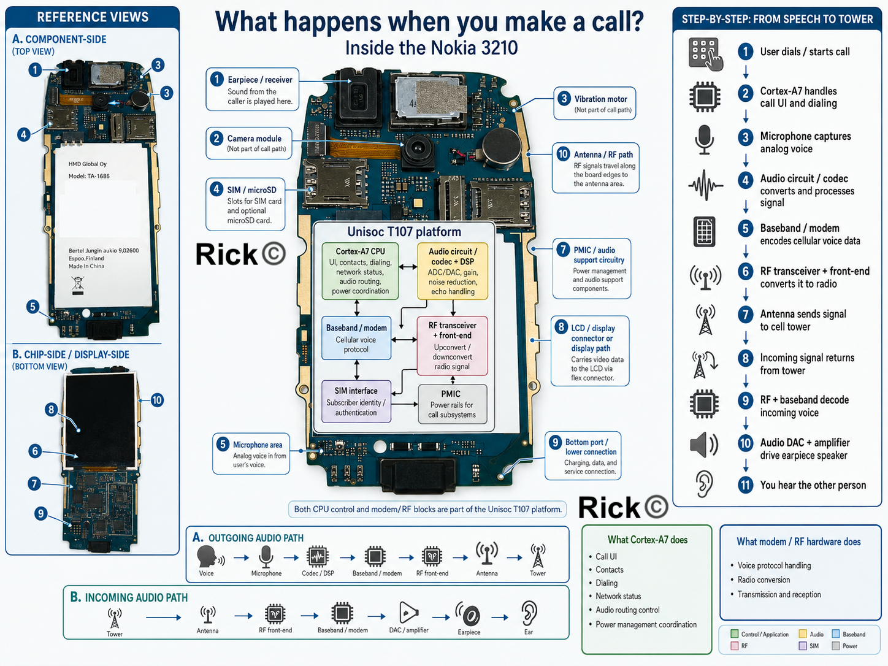
What happens when you plug in the charger?
The electrical socket supplies AC power. In the United States, this is usually around 120 V AC. In India and many other countries, it is usually around 230 V AC. This voltage is far too high for a mobile phone. If the phone were connected directly to wall power, it would be destroyed immediately and could be dangerous.
The charger adapter converts this high-voltage AC into low-voltage DC. Inside the charger, the AC is rectified, switched at high frequency, passed through transformer-based isolation, filtered, and regulated. The output is usually a safe low-voltage DC supply, commonly 5 V for basic USB charging.
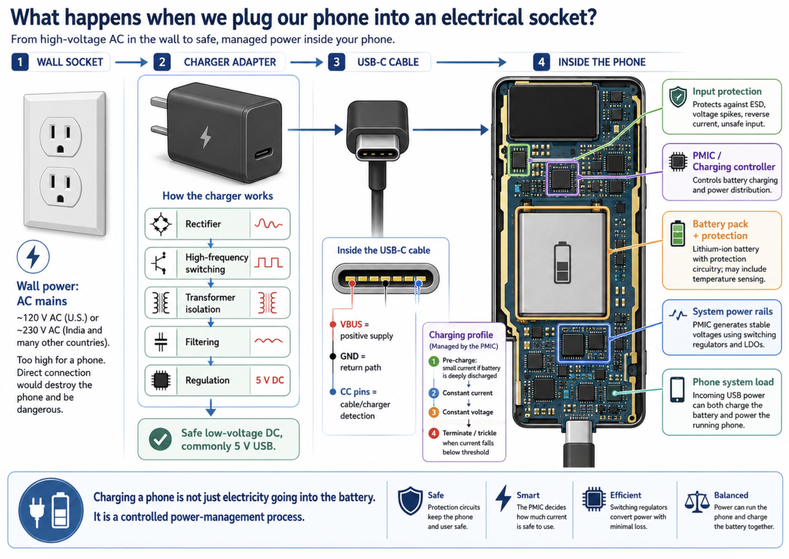
The USB-C cable carries this low-voltage DC power to the phone. In the cable, the main power lines are called VBUS and GND. VBUS carries positive supply voltage, and GND is the return path.
USB-C also has configuration pins that help the charger and device detect that a cable is connected. When the USB-C connector is inserted into the phone, power first reaches the input-protection area. This part protects the phone from electrical stress such as static discharge, voltage spikes, reverse current, or unsafe input conditions.
The PMIC, or power-management integrated circuit, does not simply send charger power straight into the battery. Lithium-ion batteries must be charged carefully.
The PMIC or battery-charging controller controls the charging current and voltage so the battery does not overheat, overcharge, or become damaged. In the early stage, if the battery is deeply discharged, the charger uses a small current to wake it safely. Then it enters constant-current charging, where the battery receives a controlled current. As the battery voltage approaches full charge, the charger switches to constant-voltage mode. Finally, when the current drops below a safe threshold, charging stops or slows.
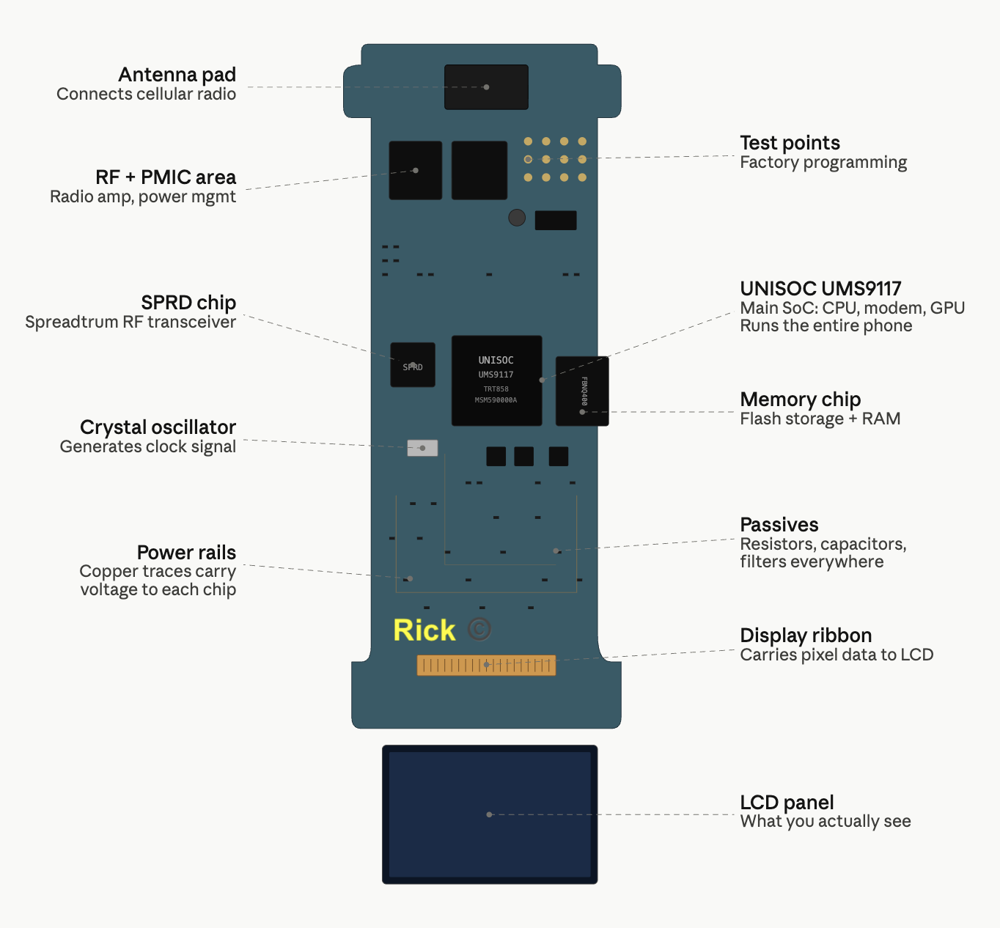
The battery itself is not just a chemical cell. A removable phone battery usually contains protection circuitry. It may include protection against overcharge, over-discharge, short circuit, and excessive current. Some battery packs also include a temperature-sensing connection so the phone can avoid charging when the battery is too hot or too cold.
While the battery is charging, the phone may also be running. That means the incoming USB power has two jobs: charge the battery and power the active phone system. The PMIC manages this power distribution. The phone cannot use raw battery voltage directly for every component.
The battery voltage changes as it discharges. A lithium-ion battery may be around 4.2 V when full and around 3.7 V nominal during normal use. But different parts of the phone need different voltages. The PMIC creates stable voltage rails using switching regulators and LDO regulators. Switching regulators are efficient and useful for larger power conversion. LDO regulators are often used where cleaner, lower-noise power is needed, such as analog audio or sensitive RF circuits. So charging a phone is a controlled power-management process.
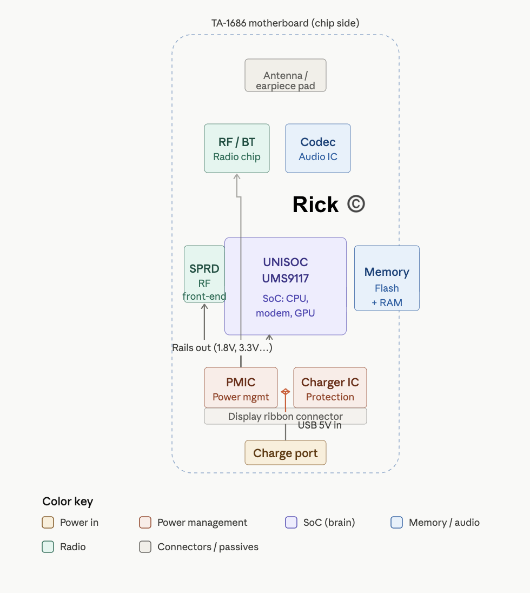
What happens when you take a picture using your Phone?
When the capture key is pressed, the keypad matrix closes a specific row-column contact, and the GPIO/keypad controller reports this interrupt to the Cortex-A7 CPU inside the Unisoc T107. The camera application then sends control commands to the camera interface and requests the PMIC to enable the required voltage rails for the camera sensor, clock, ISP, RAM, and storage path.
Light from the scene enters the fixed-focus lens, passes through the IR-cut filter, and reaches the CMOS sensor, where each photosite converts incoming photons into electrical charge. The sensor readout circuitry scans the pixel array row by row and sends raw Bayer-pattern image data to the SoC through the camera interface.
Inside the Unisoc T107, the image signal processor converts this raw sensor data into a usable image by applying black-level correction, demosaicing, white balance, color correction, denoising, sharpening, and gamma correction. The processed frame is temporarily stored in RAM as a frame buffer, then compressed into a JPEG file and written through the storage controller to internal flash or the microSD card.
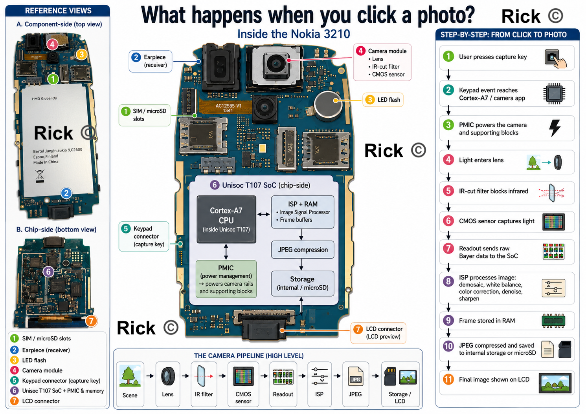
At the same time, the display controller sends the final image or preview frame through the LCD ribbon connector so the captured photo appears on the screen.
Sources and specification notes
The information in this teardown is based on a combination of public specifications, engineering knowledge of mobile-phone architecture, and direct observation of the Nokia 3210 4G hardware. The public specifications used in this teardown were cross-checked against HMD’s official Nokia 3210 specification page, including the Unisoc T107 platform, 64 MB RAM, 128 MB internal storage, S30+ operating system, USB-C charging, removable battery, and microSD support up to 32 GB.
Some internal explanations, such as the camera pipeline, PMIC behavior, audio codec path, keypad matrix scanning, and SoC subsystem organization, are engineering-level explanations based on standard mobile-phone architecture rather than a full public schematic of the Nokia 3210 4G motherboard.
References
Arm Ltd. ARM Cortex-A7 MPCore Processor Technical Reference Manual, DDI0464F.
https://developer.arm.com/documentation/ddi0464/f/HMD Global. Nokia 3210 specifications. Official Nokia/HMD product specification page.
https://www.hmd.com/en_int/nokia-3210/specsHMD Global. Nokia 3210 User Guide. Official user guide PDF.
https://www.hmd.com/en_gb/support/api/pdf/icon-user-guide?locale=en-GBRejeleene, Rick. How does a Mobile Phone Work? Research and Writing, 2026.
https://rickrejeleene.me/Tamil/posts/2026-05-13NokiaPhone/index.htmlUNISOC. T107: Cat.1 Multimode Chipset for Mainstream Feature Phones.
https://www.unisoc.com/en/product/FeaturePhoneUS/T107